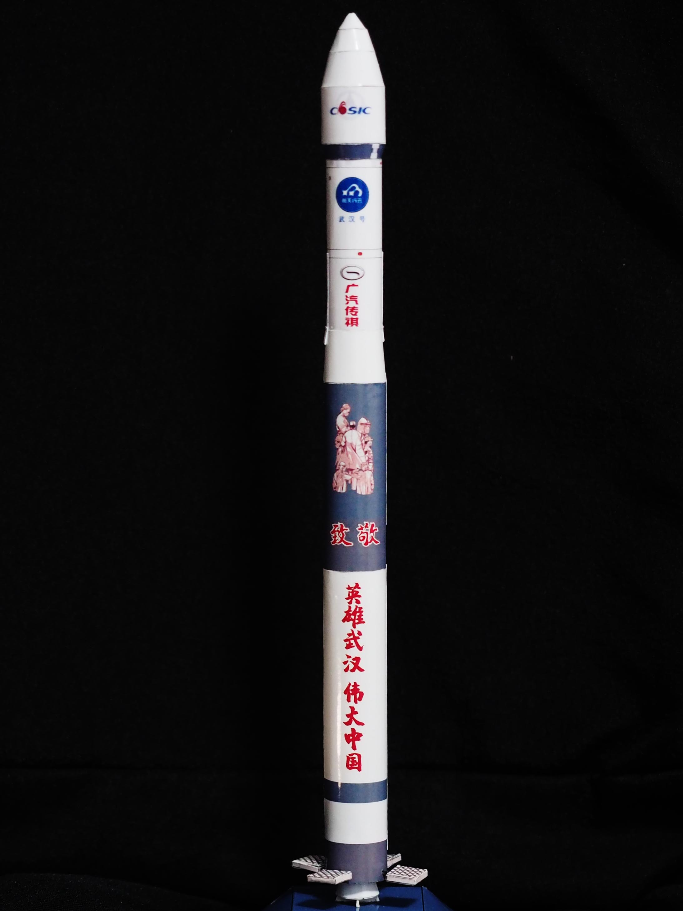
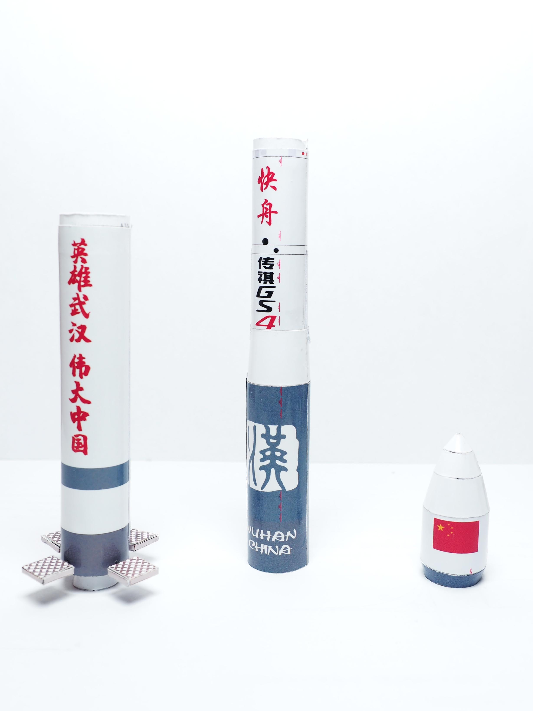
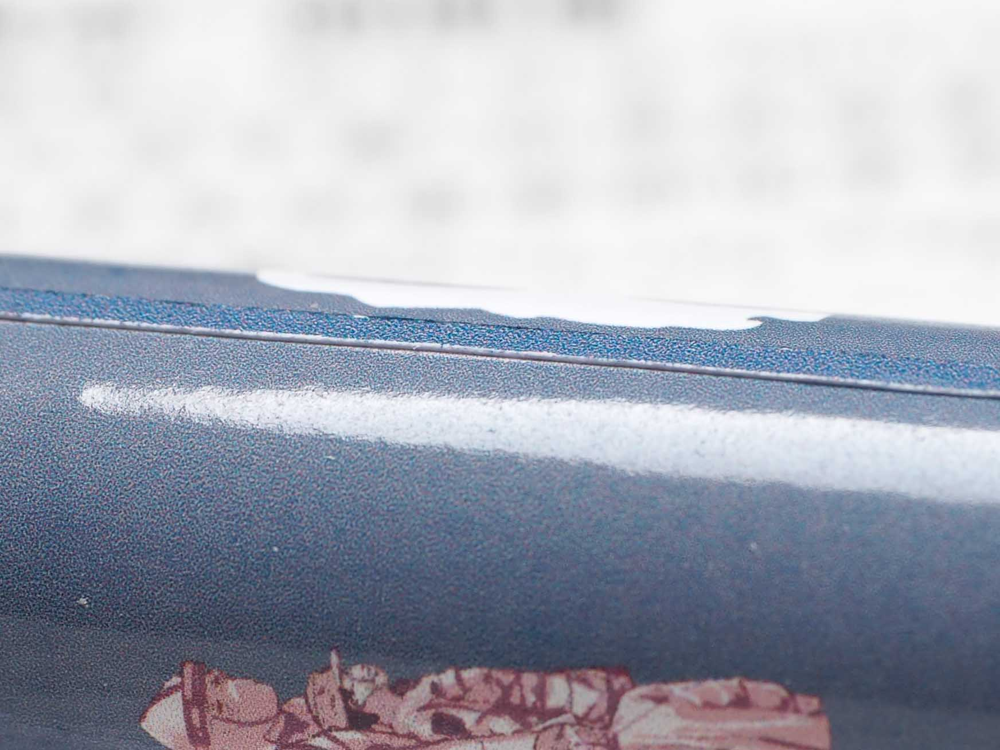
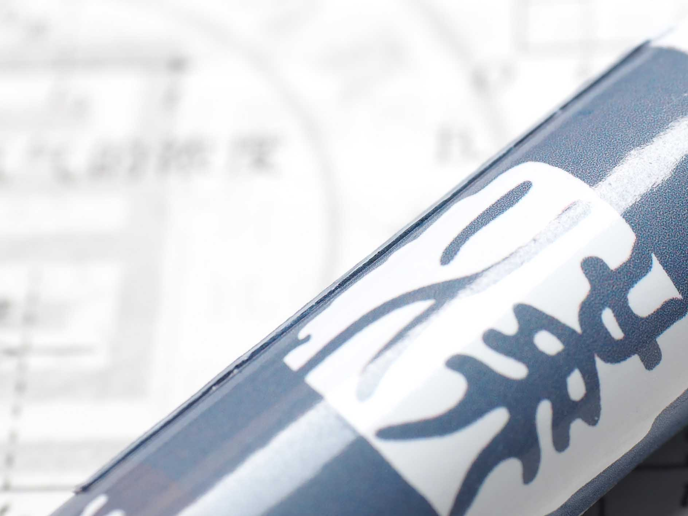

<!DOCTYPE html>


<html lang="zh-CN">
  

    <head>
      <meta charset="utf-8" />
        
      <meta
        name="viewport"
        content="width=device-width, initial-scale=1, maximum-scale=1"
      />
      <title> FZDSLR的纸模小站</title>
  <meta name="generator" content="hexo-theme-ayer">
      
      <link rel="shortcut icon" href="/favicon.ico" />
       
<link rel="stylesheet" href="/dist/main.css">

      <link
        rel="stylesheet"
        href="https://cdn.jsdelivr.net/gh/Shen-Yu/cdn/css/remixicon.min.css"
      />
      
<link rel="stylesheet" href="/css/custom.css">
 
      <script src="https://cdn.jsdelivr.net/npm/pace-js@1.0.2/pace.min.js"></script>
       
 

      <link
        rel="stylesheet"
        href="https://cdn.jsdelivr.net/npm/@sweetalert2/theme-bulma@5.0.1/bulma.min.css"
      />
      <script src="https://cdn.jsdelivr.net/npm/sweetalert2@11.0.19/dist/sweetalert2.min.js"></script>

      <!-- mermaid -->
      
      <style>
        .swal2-styled.swal2-confirm {
          font-size: 1.6rem;
        }
      </style>
    <link rel="alternate" href="/atom.xml" title="FZDSLR的纸模小站" type="application/atom+xml">
</head>
  </html>
</html>


<body>
  <div id="app">
    
      
    <main class="content on">
      <section class="outer">
  <article
  id="page-"
  class="article article-type-page"
  itemscope
  itemprop="blogPost"
  data-scroll-reveal
>
  <div class="article-inner">
       
    <div class="article-entry" itemprop="articleBody">
       
  <h1 id="前言"><a href="#前言" class="headerlink" title="前言"></a>前言</h1><p>这个模型从去年（2020）6月一直搞到现在，趁元旦假期，发布一下。</p>
<p><br></p>
<h1 id="Q-amp-A"><a href="#Q-amp-A" class="headerlink" title="Q&amp;A"></a>Q&amp;A</h1><h3 id="应当使用什么纸？"><a href="#应当使用什么纸？" class="headerlink" title="应当使用什么纸？"></a>应当使用什么纸？</h3><p>粘贴边页使用普通A4纸即可，主体页则应使用薄的光面纸。</p>
<h3 id="为什么栅格翼位置和涂装没有对齐？"><a href="#为什么栅格翼位置和涂装没有对齐？" class="headerlink" title="为什么栅格翼位置和涂装没有对齐？"></a>为什么栅格翼位置和涂装没有对齐？</h3><p>原箭如此。图中并不是遥六箭，而是遥十一“我们的太空号”，不过也可以形象说明问题。</p>
<h3 id="三级上方的几个“窗口”不是蓝色的吗？"><a href="#三级上方的几个“窗口”不是蓝色的吗？" class="headerlink" title="三级上方的几个“窗口”不是蓝色的吗？"></a>三级上方的几个“窗口”不是蓝色的吗？</h3><p>不是。它们应该是金属箔片，只不过在发射场环境下反射蓝天而显现出蓝色。</p>
<table>
<thead>
<tr>
<th>组装时</th>
<th>发射场环境</th>
</tr>
</thead>
<tbody><tr>
<td></td>
<td></td>
</tr>
</tbody></table>
<h3 id="这整流罩形状不对劲？"><a href="#这整流罩形状不对劲？" class="headerlink" title="这整流罩形状不对劲？"></a>这整流罩形状不对劲？</h3><p>由于冯—卡门头锥属于不可展开的曲面，在设计纸模型时必须将其分割为数个圆锥和圆台，这其中自然存在误差，在制作时产生的接缝会使这种误差更为明显。至于为什么不把头锥设计成“荷花瓣”构型——因为最容易搞到的光面纸是铜版纸，而铜版纸虽然表现效果良好，但难以加工（切过的人应该深有体会），如果将头锥顶部设计为“荷花瓣”，会非常难切（我试过）。</p>
<h3 id="还有哪些细节没有照顾到？"><a href="#还有哪些细节没有照顾到？" class="headerlink" title="还有哪些细节没有照顾到？"></a>还有哪些细节没有照顾到？</h3><p>二三级连接件上的小结构，外部管线的细致结构（太小了）；字魂-44与实际水贴效果的区别，装配缝隙的细节；几乎所有的内部结构。</p>
<h3 id="参考颜色是用来干什么用的？"><a href="#参考颜色是用来干什么用的？" class="headerlink" title="参考颜色是用来干什么用的？"></a>参考颜色是用来干什么用的？</h3><p>补白。简而言之，就是使用颜料或彩铅等将纸张切割后的白色缝隙涂上颜色，避免突兀。</p>
<table>
<thead>
<tr>
<th>不补白</th>
<th>补白</th>
</tr>
</thead>
<tbody><tr>
<td></td>
<td></td>
</tr>
</tbody></table>
<h3 id="我还有问题…"><a href="#我还有问题…" class="headerlink" title="我还有问题…"></a>我还有问题…</h3><p>本人目前学业繁忙，可能不怎么看贴吧，如有问题，email to: <a href="mailto:&#102;&#x7a;&#x64;&#x73;&#108;&#114;&#x40;&#x6f;&#117;&#116;&#x6c;&#x6f;&#111;&#x6b;&#46;&#99;&#111;&#x6d;">&#102;&#x7a;&#x64;&#x73;&#108;&#114;&#x40;&#x6f;&#117;&#116;&#x6c;&#x6f;&#111;&#x6b;&#46;&#99;&#111;&#x6d;</a></p>
<h3 id="有完整版说明书吗？"><a href="#有完整版说明书吗？" class="headerlink" title="有完整版说明书吗？"></a>有完整版说明书吗？</h3><p>暂时没有，原因见上。</p>
<h1 id="希望你能享受本模型的制作过程！"><a href="#希望你能享受本模型的制作过程！" class="headerlink" title="希望你能享受本模型的制作过程！"></a>希望你能享受本模型的制作过程！</h1> 
      <!-- reward -->
      
    </div>
    

    <!-- copyright -->
    
    <footer class="article-footer">
       
<div class="share-btn">
      <span class="share-sns share-outer">
        <i class="ri-share-forward-line"></i>
        分享
      </span>
      <div class="share-wrap">
        <i class="arrow"></i>
        <div class="share-icons">
          
          <a class="weibo share-sns" href="javascript:;" data-type="weibo">
            <i class="ri-weibo-fill"></i>
          </a>
          <a class="weixin share-sns wxFab" href="javascript:;" data-type="weixin">
            <i class="ri-wechat-fill"></i>
          </a>
          <a class="qq share-sns" href="javascript:;" data-type="qq">
            <i class="ri-qq-fill"></i>
          </a>
          <a class="douban share-sns" href="javascript:;" data-type="douban">
            <i class="ri-douban-line"></i>
          </a>
          <!-- <a class="qzone share-sns" href="javascript:;" data-type="qzone">
            <i class="icon icon-qzone"></i>
          </a> -->
          
          <a class="facebook share-sns" href="javascript:;" data-type="facebook">
            <i class="ri-facebook-circle-fill"></i>
          </a>
          <a class="twitter share-sns" href="javascript:;" data-type="twitter">
            <i class="ri-twitter-fill"></i>
          </a>
          <a class="google share-sns" href="javascript:;" data-type="google">
            <i class="ri-google-fill"></i>
          </a>
        </div>
      </div>
</div>

<div class="wx-share-modal">
    <a class="modal-close" href="javascript:;"><i class="ri-close-circle-line"></i></a>
    <p>扫一扫，分享到微信</p>
    <div class="wx-qrcode">
      
    </div>
</div>

<div id="share-mask"></div>  
    </footer>
  </div>

   
  
    
</article>

</section>
      <footer class="footer">
  <div class="outer">
    <ul>
      <li>
        Copyrights &copy;
        2021
        <i class="ri-heart-fill heart_icon"></i> FZDSLR
      </li>
    </ul>
    <ul>
      <li>
        
      </li>
    </ul>
    <ul>
      <li>
        
        
        <span>
  <span><i class="ri-user-3-fill"></i>访问人数:<span id="busuanzi_value_site_uv"></span></span>
  <span class="division">|</span>
  <span><i class="ri-eye-fill"></i>浏览次数:<span id="busuanzi_value_page_pv"></span></span>
</span>
        
      </li>
    </ul>
    <ul>
      
    </ul>
    <ul>
      
    </ul>
    <ul>
      <li>
        <!-- cnzz统计 -->
        
      </li>
    </ul>
  </div>
</footer>    
    </main>
    <div class="float_btns">
      <div class="totop" id="totop">
  <i class="ri-arrow-up-line"></i>
</div>

<div class="todark" id="todark">
  <i class="ri-moon-line"></i>
</div>

    </div>
    <aside class="sidebar on">
      <button class="navbar-toggle"></button>
<nav class="navbar">
  
  <div class="logo">
    <a href="/"></a>
  </div>
  
  <ul class="nav nav-main">
    
    <li class="nav-item">
      <a class="nav-item-link" href="/">主页</a>
    </li>
    
    <li class="nav-item">
      <a class="nav-item-link" target="_blank" rel="noopener" href="https://blog.fzdslr.cn">博客</a>
    </li>
    
    <li class="nav-item">
      <a class="nav-item-link" href="/archives">归档</a>
    </li>
    
    <li class="nav-item">
      <a class="nav-item-link" href="/categories">分类</a>
    </li>
    
    <li class="nav-item">
      <a class="nav-item-link" href="/tags">标签</a>
    </li>
    
    <li class="nav-item">
      <a class="nav-item-link" href="/friends">友链</a>
    </li>
    
    <li class="nav-item">
      <a class="nav-item-link" href="/about">关于我</a>
    </li>
    
  </ul>
</nav>
<nav class="navbar navbar-bottom">
  <ul class="nav">
    <li class="nav-item">
      
      <a class="nav-item-link nav-item-search"  title="搜索">
        <i class="ri-search-line"></i>
      </a>
      
      
      <a class="nav-item-link" target="_blank" href="/atom.xml" title="RSS Feed">
        <i class="ri-rss-line"></i>
      </a>
      
    </li>
  </ul>
</nav>
<div class="search-form-wrap">
  <div class="local-search local-search-plugin">
  <input type="search" id="local-search-input" class="local-search-input" placeholder="Search...">
  <div id="local-search-result" class="local-search-result"></div>
</div>
</div>
    </aside>
    <div id="mask"></div>

<!-- #reward -->
<div id="reward">
  <span class="close"><i class="ri-close-line"></i></span>
  <p class="reward-p"><i class="ri-cup-line"></i>请我喝杯咖啡吧~</p>
  <div class="reward-box">
    
    
  </div>
</div>
    
<script src="/js/jquery-3.6.0.min.js"></script>
 
<script src="/js/lazyload.min.js"></script>

<!-- Tocbot -->

<script src="https://cdn.jsdelivr.net/npm/jquery-modal@0.9.2/jquery.modal.min.js"></script>
<link
  rel="stylesheet"
  href="https://cdn.jsdelivr.net/npm/jquery-modal@0.9.2/jquery.modal.min.css"
/>
<script src="https://cdn.jsdelivr.net/npm/justifiedGallery@3.7.0/dist/js/jquery.justifiedGallery.min.js"></script>

<script src="/dist/main.js"></script>

<!-- ImageViewer -->
 <!-- Root element of PhotoSwipe. Must have class pswp. -->
<div class="pswp" tabindex="-1" role="dialog" aria-hidden="true">

    <!-- Background of PhotoSwipe. 
         It's a separate element as animating opacity is faster than rgba(). -->
    <div class="pswp__bg"></div>

    <!-- Slides wrapper with overflow:hidden. -->
    <div class="pswp__scroll-wrap">

        <!-- Container that holds slides. 
            PhotoSwipe keeps only 3 of them in the DOM to save memory.
            Don't modify these 3 pswp__item elements, data is added later on. -->
        <div class="pswp__container">
            <div class="pswp__item"></div>
            <div class="pswp__item"></div>
            <div class="pswp__item"></div>
        </div>

        <!-- Default (PhotoSwipeUI_Default) interface on top of sliding area. Can be changed. -->
        <div class="pswp__ui pswp__ui--hidden">

            <div class="pswp__top-bar">

                <!--  Controls are self-explanatory. Order can be changed. -->

                <div class="pswp__counter"></div>

                <button class="pswp__button pswp__button--close" title="Close (Esc)"></button>

                <button class="pswp__button pswp__button--share" style="display:none" title="Share"></button>

                <button class="pswp__button pswp__button--fs" title="Toggle fullscreen"></button>

                <button class="pswp__button pswp__button--zoom" title="Zoom in/out"></button>

                <!-- Preloader demo http://codepen.io/dimsemenov/pen/yyBWoR -->
                <!-- element will get class pswp__preloader--active when preloader is running -->
                <div class="pswp__preloader">
                    <div class="pswp__preloader__icn">
                        <div class="pswp__preloader__cut">
                            <div class="pswp__preloader__donut"></div>
                        </div>
                    </div>
                </div>
            </div>

            <div class="pswp__share-modal pswp__share-modal--hidden pswp__single-tap">
                <div class="pswp__share-tooltip"></div>
            </div>

            <button class="pswp__button pswp__button--arrow--left" title="Previous (arrow left)">
            </button>

            <button class="pswp__button pswp__button--arrow--right" title="Next (arrow right)">
            </button>

            <div class="pswp__caption">
                <div class="pswp__caption__center"></div>
            </div>

        </div>

    </div>

</div>

<link rel="stylesheet" href="https://cdn.jsdelivr.net/npm/photoswipe@4.1.3/dist/photoswipe.min.css">
<link rel="stylesheet" href="https://cdn.jsdelivr.net/npm/photoswipe@4.1.3/dist/default-skin/default-skin.min.css">
<script src="https://cdn.jsdelivr.net/npm/photoswipe@4.1.3/dist/photoswipe.min.js"></script>
<script src="https://cdn.jsdelivr.net/npm/photoswipe@4.1.3/dist/photoswipe-ui-default.min.js"></script>

<script>
    function viewer_init() {
        let pswpElement = document.querySelectorAll('.pswp')[0];
        let $imgArr = document.querySelectorAll(('.article-entry img:not(.reward-img)'))

        $imgArr.forEach(($em, i) => {
            $em.onclick = () => {
                // slider展开状态
                // todo: 这样不好，后面改成状态
                if (document.querySelector('.left-col.show')) return
                let items = []
                $imgArr.forEach(($em2, i2) => {
                    let img = $em2.getAttribute('data-idx', i2)
                    let src = $em2.getAttribute('data-target') || $em2.getAttribute('src')
                    let title = $em2.getAttribute('alt')
                    // 获得原图尺寸
                    const image = new Image()
                    image.src = src
                    items.push({
                        src: src,
                        w: image.width || $em2.width,
                        h: image.height || $em2.height,
                        title: title
                    })
                })
                var gallery = new PhotoSwipe(pswpElement, PhotoSwipeUI_Default, items, {
                    index: parseInt(i)
                });
                gallery.init()
            }
        })
    }
    viewer_init()
</script> 
<!-- MathJax -->

<!-- Katex -->

<!-- busuanzi  -->
 
<script src="/js/busuanzi-2.3.pure.min.js"></script>
 
<!-- ClickLove -->

<!-- ClickBoom1 -->

<!-- ClickBoom2 -->

<!-- CodeCopy -->
 
<link rel="stylesheet" href="/css/clipboard.css">
 <script src="https://cdn.jsdelivr.net/npm/clipboard@2/dist/clipboard.min.js"></script>
<script>
  function wait(callback, seconds) {
    var timelag = null;
    timelag = window.setTimeout(callback, seconds);
  }
  !function (e, t, a) {
    var initCopyCode = function(){
      var copyHtml = '';
      copyHtml += '<button class="btn-copy" data-clipboard-snippet="">';
      copyHtml += '<i class="ri-file-copy-2-line"></i><span>COPY</span>';
      copyHtml += '</button>';
      $(".highlight .code pre").before(copyHtml);
      $(".article pre code").before(copyHtml);
      var clipboard = new ClipboardJS('.btn-copy', {
        target: function(trigger) {
          return trigger.nextElementSibling;
        }
      });
      clipboard.on('success', function(e) {
        let $btn = $(e.trigger);
        $btn.addClass('copied');
        let $icon = $($btn.find('i'));
        $icon.removeClass('ri-file-copy-2-line');
        $icon.addClass('ri-checkbox-circle-line');
        let $span = $($btn.find('span'));
        $span[0].innerText = 'COPIED';
        
        wait(function () { // 等待两秒钟后恢复
          $icon.removeClass('ri-checkbox-circle-line');
          $icon.addClass('ri-file-copy-2-line');
          $span[0].innerText = 'COPY';
        }, 2000);
      });
      clipboard.on('error', function(e) {
        e.clearSelection();
        let $btn = $(e.trigger);
        $btn.addClass('copy-failed');
        let $icon = $($btn.find('i'));
        $icon.removeClass('ri-file-copy-2-line');
        $icon.addClass('ri-time-line');
        let $span = $($btn.find('span'));
        $span[0].innerText = 'COPY FAILED';
        
        wait(function () { // 等待两秒钟后恢复
          $icon.removeClass('ri-time-line');
          $icon.addClass('ri-file-copy-2-line');
          $span[0].innerText = 'COPY';
        }, 2000);
      });
    }
    initCopyCode();
  }(window, document);
</script>
 
<!-- CanvasBackground -->

<script>
  if (window.mermaid) {
    mermaid.initialize({ theme: "forest" });
  }
</script>


    
    

  </div>
</body>

</html>